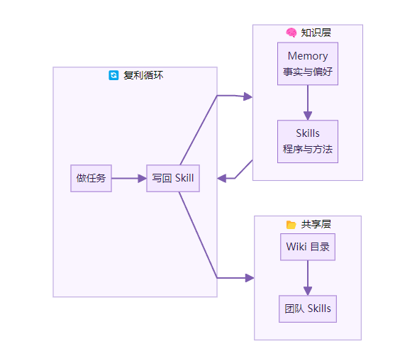
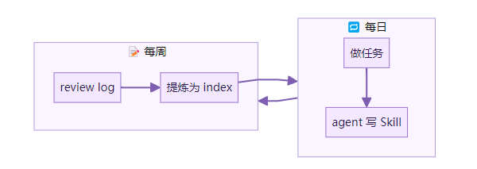

上一篇聊了 Skills 是什么。这篇带你搭起来。
我自己的系统跑了两个月。从零开始，现在有三十多个 Skill。每天用 agent 干活，它越来越像一个熟练的同事。
走完这篇，你会有一个能自我进化的知识系统。做过的事不会白做。每一次操作都在积累。
整体结构

三层。Memory 记住你是谁。Skills 记住怎么干活。Wiki 目录把零散的知识组织起来。三者互相喂养，越用越厚。
第一步：确认 Skills 目录存在
ls ~/.hermes/skills/
如果目录不存在：
mkdir -p ~/.hermes/skills/
做对了的标志：目录存在，能 ls 出来。
第二步：理解 SKILL.md 的结构
每个 Skill 是一个文件夹，里面有一个 SKILL.md。格式很简单。
---
name: writing-pr-descriptions
description: "按团队规范写 PR 描述"
version: 1
---
## When to Use
当完成功能开发，准备提交 PR 的时候。
## Procedure
1. 读取 git diff 的变更摘要
2. 按模板填写：Summary / Changes / Testing
3. 如果涉及 breaking change，加 Migration 段落
## Pitfalls
- 不要把实现细节写进 Summary
- Testing 段落要写实际跑过的命令
## Verification
PR 描述包含三个必填段落，且 Summary 不超过两句话。
五个部分。frontmatter 是元信息。When to Use 告诉 agent 什么时候加载。Procedure 是步骤。Pitfalls 是坑。Verification 是完成标准。
做对了的标志：你能手写一个 SKILL.md，知道每个段落的作用。
第三步：让 agent 自动创建 Skill
不用自己写所有 Skill。
agent 完成一个复杂任务后，如果用了 5 个以上的工具调用，它会判断这个过程是否值得记录。如果值得，它用 skill_manage 工具自动创建。
你要做的是：正常干活。
试了一下。我让 agent 帮我配置一个新项目的 CI pipeline。它查了文档，试了几种配置，最后跑通了。然后它问我：要不要把这个过程存为 Skill。
我说好。它就写了一个 setup-ci-pipeline 的 Skill。
下次新项目，它直接按这个流程走。不用再摸索。
做对了的标志：完成一个复杂任务后，~/.hermes/skills/ 里多了一个新文件夹。
第四步：搭建 Wiki 目录
这是 Karpathy 的 LLM Wiki[1] 思路。两个文件解决问题。
mkdir -p ~/wiki
touch ~/wiki/index.md
touch ~/wiki/log.md
index.md 是空间维度。按主题组织知识。
# Knowledge Index
## 项目
- [[project-alpha]] - 电商后台重构
- [[project-beta]] - 数据管道
## 工具链
- [[docker-patterns]] - 常用 Docker 配置
- [[git-workflows]] - 团队 Git 规范
log.md 是时间维度。每次有新发现，追加一条。
# Knowledge Log
## 2026-05-07
- 发现 pnpm workspace 的 catalog 功能可以统一依赖版本
- Hermes skill_manage patch 比 edit 省 token
## 2026-05-06
- PostgreSQL NOTIFY/LISTEN 比轮询省资源
后来发现，log 里反复出现的条目，就该提炼成 Skill 或 index 里的一个页面。这是自然的沉淀过程。
做对了的标志：~/wiki/index.md 和 ~/wiki/log.md 都有内容。
第五步：配置外部 Skill 目录
打开 Hermes 的配置文件。
vim ~/.hermes/config.yaml
加上外部目录：
skills:
external_dirs:
- ~/wiki/skills
- ~/team-repo/shared-skills
这样做的好处：Wiki 里沉淀的方法论可以直接变成 Skill。团队共享的 Skills 放在一个 Git 仓库里，所有人的 agent 都能用。
新人入职，clone 一下 team-repo，agent 立刻知道团队的工作方式。
做对了的标志：config.yaml 里有 external_dirs 配置，指向至少一个目录。
第六步：用 Skills Hub 补充能力
不用从零开始。Hub 里有现成的。
hermes skills browse
hermes skills search "code review"
hermes skills install systematic-debugging
安装完可以检查更新：
hermes skills check
hermes skills update
我装了几个通用的：systematic-debugging、test-driven-development、verification-before-completion。这些是底层能力，几乎每天都会触发。
做对了的标志：hermes skills browse 能列出可用 Skill，至少安装了一个。
第七步：建立复利循环
所有部件就位了。让它转起来。
日常工作流：
做任务。agent 加载相关 Skill，按步骤执行 任务完成。如果过程复杂，agent 创建新 Skill 如果有新发现，追加到 wiki/log.md每周看一次 log。反复出现的模式，提炼成 Skill 或 index 条目
这是 file-back。不是做完就忘。是做完就写回去。

一个月后回头看。你的 Skills 目录从 0 变成 20。agent 处理常见任务的速度明显变快。它不再问你「用什么测试框架」「PR 格式是什么」「部署到哪个环境」。
它知道了。因为它做过。
做对了的标志：连续一周，每天至少有一个新 Skill 或一条 log 产生。
关于 token 效率
有人会担心：Skill 多了，会不会撑爆 context window。
不会。渐进式披露。agent 平时只加载 Level 0，就是名字和描述的列表。大概 3000 token。只有需要某个 Skill 的时候才加载完整内容。
而且 skill_manage patch 可以只改 Skill 的一小段。不用整个重写。省 token，也保留了历史演化的痕迹。
和 Memory 的配合
Memory 存事实。Skills 存方法。
Memory 里的内容：我用 pnpm 管理依赖。项目部署在 AWS ap-northeast-1。我讨厌 console.log 调试。
Skills 里的内容：怎么用 pnpm workspace 初始化 monorepo。怎么部署到 ap-northeast-1 的 ECS。怎么用 debugger 和 breakpoint 替代 console.log。
Memory 让 agent 认识你。Skills 让 agent 能帮你。两个一起，才是完整的个人知识系统。
这套系统的核心不是工具。是习惯。
做完一件事，多花三十秒想一下：这个过程值得记住吗。如果值得，让 agent 写下来。或者自己写一条 log。
三十秒换来的是：下次不用再花三十分钟。
这就是复利。不是知道得越来越多。是做得越来越快。
如果这些文字刚好落进你的片刻心绪，欢迎转给需要的人。
参考资料：
Skills System 文档[2] Karpathy LLM Wiki gist[3] Hermes Agent GitHub[4]
Karpathy 的 LLM Wiki: https://gist.github.com/karpathy/1dd0294ef9567971c1e4348a90d69285
[2]Skills System 文档: https://hermes-agent.nousresearch.com/docs/user-guide/features/skills
[3]Karpathy LLM Wiki gist: https://gist.github.com/karpathy/1dd0294ef9567971c1e4348a90d69285
[4]Hermes Agent GitHub: https://github.com/nousresearch/hermes-agent
下方是赋能君的AI学习交流永久免费星球，想学习更多内容，欢迎扫码加入。

🙌 如果你阅读到这里，说明我们对信息的认可区域是有一定交集的，可以说我们是同道中人，所以如果你有自认为不错的信息获取渠道，欢迎留言或者私聊我，谢谢。
都看到这里了，就给个关注吧👀：
喜欢我的文章，可以请你右下角顺手来一波点赞&在看&分享三连么👉